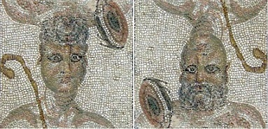
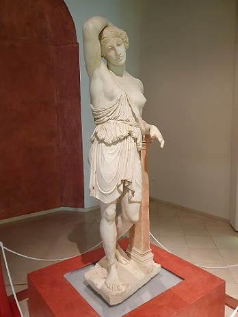

|
Écija, antiguo asentamiento Tartésico, Turdetano y
finalmente conquistado por Roma. Se asentaba en un cerro elevado sobre
el Geníl llamado el Picadero, donde se observan los restos de la
muralla. El municipio de Écija se localiza a 94km de Sevilla por la N-IV.
 Ver: Video
En época romana ya existía en Astigi un eje urbano orientado de este a
oeste, entre la Puerta del Río y la Puerta Cerrada, que aún hoy
persiste. En sentido norte-sur discurría otro eje entre la Puerta de
Palma y la Puerta de Osuna, a lo largo de las actuales calles Canalejas,
Santa Cruz y Cánovas del Castillo. Sobre este eje y hacia el norte, se
produce la primera expansión extramuros, en un desarrollo lineal a lo
largo de la actual calle José García de Castro. El cardo y el decumano
se cruzaban en las inmediaciones de lo que hoy ocupa la Plaza Mayor o de
España, que sería el foro romano.
Zona de numerosas domus agrícolas. Del foro provienen los enormes fustes de la
Iglesia de Santa Bárbara y el Palacio Valdehermoso; mosaicos, los
capiteles corintios hallados en la Plaza de España o los numerosos
restos escultóricos. Astigi estaba muy ligada al comercio del aceite,
factorías, ánforas... Cuando decayó el comercio, también lo hizo la
ciudad. En el año 2002 se halló una estatua, la Amazona Herida, del siglo II, copia de un original griego del siglo IV a.e.c. Solo existen cuatro en el mundo. Conserva los restos de su policromia y mide 2,10m. Se localizó en el estanque trasero del templo. Una construcción que data de la época de fundación de la ciudad romana por el emperador Augusto, en torno al año 14 a.e.c, una especie de piscina de unas dimensiones menores a la natatio hallada en la primera fase de las excavaciones y en cuyo interior aparecieron restos de esculturas. También se han hallado monedas, restos escultóricos, cerámicos... y vestigios visigodos , islámicos.... En septiembre de 2019, en el yacimiento arqueológico de Plaza de Armas se han descubierto tres nuevos mosaicos romanos, uno de ellos es singular por su dimensión: doce metros y medio de largo que revestía una fuente de un patio de una domus (vivienda) de la villa. Decoraba un patio de hasta 400 metros cuadrados. Estos mosaicos están en una estancia próxima a donde se localizó el excepcional paño ‘Los Amores de Zeus’ en 2015. De época romana podemos visitar: El Museo Histórico Municipal en el Palacio de Benamejí. El estanque romano de Plaza España y el Yacimiento Arqueológico de la Plaza de Armas. En el museo del Palacio Benamejí podremos ver, piezas prehistóricas, las tres estelas de guerreros, la “Placa de Écija”, una pieza singular de orfebrería tartésica, mosaicos romanos y la reja romana recubierta de pan de oro, esculturas como la “Amazona herida”, y inscripciones, capiteles, ...
 En el Yacimiento de la Plaza de Armas, podemos encontrar restos turdetanos, romanos y restos de la muralla de un castillo musulmán, podemos observar los niveles ocupacionales de Écija desde sus orígenes, hacia el siglo VIII a.e.c. hasta la actualidad. Destacan los restos romanos.
El Estanque romano, originalmente existía un templo romano sobre podio que estaba orientado hacia el sur, donde se encontraba el foro. A su espalda se localizaba un estanque monumental, construido también a finales del siglo I a.e.c.
En Écija ha aparecido más de 80 mosaicos de época romana. Destacamos el mosaico de los Océanos, El mosaico de El Don del Vino, el de las 4 Estaciones, el mosaico del Triunfo de Baco, el de las Nereidas, el Sacrificio de la reina Circe, el del Doble Rapto,......Los restos del anfiteatro astigitano aparecieron bajo la actual Plaza de Toros de Écija. En marzo se celebra "El Festival Romano de Écija". Más info: Ver: Ecija_romana |
||||||||||